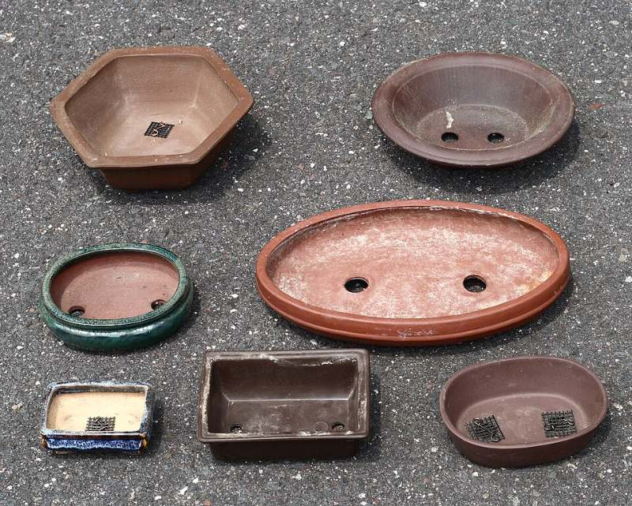

이키본 데모 · 화면 이동
01 홈
02 분재 목록
03 나무 상세 + 옵션
04 화분 고르기(분갈이)
05 사리 AI 미리보기
06 주문·결제
07 커뮤니티
08 내 분재 일지
09 물어보세요
10 관리자 · 서비스 요청
기획 문서
사진은 Wikimedia Commons(CC) · 상품명·가격은 예시
이
이키본 분재
분재
화분·흙·도구
클래스·예약
커뮤니티
갤러리
내 분재 일지
장바구니 1
‹ 문인목 해송 상세로 돌아가기
1
화분 고르기
2
시공 시기 선택
3
주문서에 담기
화분 바꿔서 받기
문인목 해송(수고 42cm · 근장 9cm)에 어울리는 화분만 골라 보여드려요. 폭은 나무 높이의 2/3 안팎, 깊이는 목대 굵기에 맞춥니다.
추천 폭 22~30cm ✓
장방(사각)
타원
무유약
유약
일본 도코나메
국내 작가분
선택됨

무유약 장방분 · 적갈
26 × 19 × 6cm · 도코나메
68,000원
송백류 추천
무유약 육각분 · 갈색
24 × 24 × 7cm · 도코나메
74,000원
송백류 추천
유약 타원분 · 청록
28 × 20 × 5cm · 국내 작가분
92,000원
잡목류 추천
무유약 타원분 · 흑갈
30 × 22 × 6cm · 도코나메
85,000원
송백류 추천
유약 장방분 · 남색
25 × 18 × 6cm · 국내 작가분
58,000원
화목류 추천
훈련분 (플라스틱)
27 × 20 × 8cm
9,000원
임시·훈련용
화분 8종 더 보기
2 · 시공 시기 선택
해송은 2월 중순~3월이 분갈이 적기예요. 지금(10월)에 하면 뿌리가 상할 수 있어요.
임시 화분으로 먼저 받기
지금은 훈련분에 담아 보내고, 고른 화분은 함께 보내드려요. 2027년 3월에 이키본에 보내주시면
무료로 분갈이
해 드려요(왕복 택배비만 부담).
추천 · 가장 많이 선택
봄까지 이키본에서 보관
분재원에서 겨울을 나고, 3월 분갈이 후 발송해요. 보관료 무료, 월 1회 사진으로 상태를 알려드려요.
직접 분갈이할게요
화분과 흙(적옥토·마사토 배합 2L)만 함께 보내드려요. 공임은 빠집니다. 봄에 하는 방법을 일지에서 안내해요.
왜 지금 분갈이를 안 하나요?
가을·겨울은 뿌리가 쉬는 시기라 자르면 회복이 느려요. 이른 봄 새순이 트기 직전이 가장 안전합니다.
수종별 적기
소나무류 2월 중순~3월 · 진백 3~4월 · 단풍·소사 2~3월(잎 나기 전) · 철쭉 꽃 진 직후 6월
흙은 무엇을 쓰나요?
송백류는 적옥토 6 : 마사토 3 : 경석 1, 잡목류는 적옥토 비율을 높여요. 화분과 함께 배합 흙을 보내드려요.
화분 크기 기준
폭은 나무 높이의 2/3 안팎, 깊이는 목대 굵기와 비슷하게. 문인목은 조금 작고 얕은 화분이 어울려요.